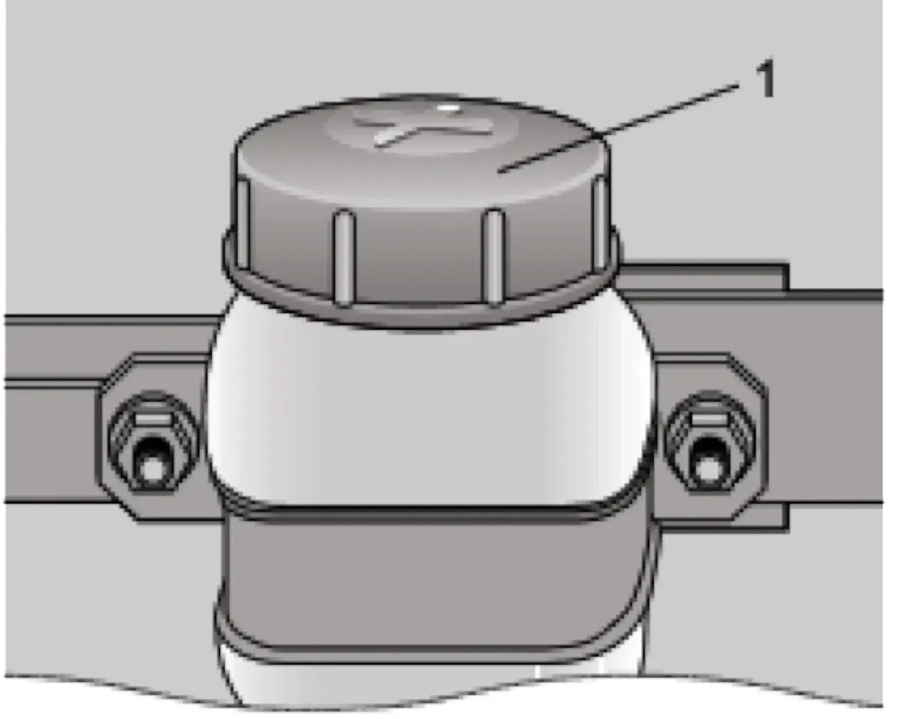

Гидропривод выключения сцепления
При новых накладках ведомого диска уровень жидкости в бачке главного цилиндра гидропривода выключения сцепления должен быть по нижнюю кромку заливной горловины.

На автомобиле применён гидравлический привод сцепления с беззазорной установкой подшипника выключения сцепления, не требующий вмешательства во время эксплуатации. Компенсация износа накладок ведомого диска происходит автоматически внутри элементов привода и визуально отражается в изменении уровня тормозной жидкости. Приближение уровня жидкости в бачке к нижней кромке металлического хомута крепления бачка косвенно свидетельствует о предельном износе накладок ведомого диска сцепления.
При проверке состояния элементов привода обращайте внимание на состояние шлангов и защитных чехлов. При обнаружении трещин их необходимо заменить на новые. В случае падения уровня жидкости в бачке необходимо найти и устранить негерметичность. После устранения течи уровень жидкости в бачке необходимо обеспечить как при новых накладках ведомого диска.
Замена тормозной жидкости в гидроприводе выключения сцепления, так же как и её замена в гидроприводе рабочей тормозной системы, должна проводиться через 3 года у дилера ЗАО «Джи Эм-АВТОВАЗ».